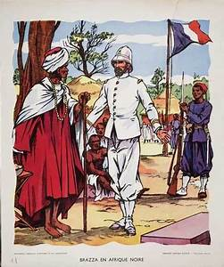
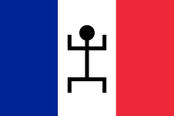
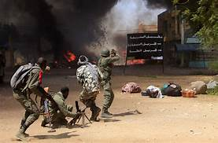

Le Mali possède une histoire riche et relativement bien connue. Il a été le siège de trois grands empires : l'empire du Ghana, l'empire du Mali et l'empire Songhaï. Il sera par la suite une colonie française. Quelques années après l'indépendance, il subira la dictature de Moussa Traoré avant de connaître un régime démocratique depuis le début des années 1990.
| Epoques | Evenements de l'époque |
|---|---|
| Histoire précoloniale | Les premières traces de peuplement humain remontent au Ve millénaire av. J.-C. Au IIIe millénaire av. J.-C. les modifications climatiques entraînent un fort afflux de populations en provenance du Sahara. Apres l'Empire du Ghana aussi nommé Ouagadou apparait, il est érigé par les Sarakolés au IVe siècle. Il fonde sa prospérité sur le sel et l'or. L'empire se désagrégera en 1076 suite aux percées des berbères venus islamiser l'Afrique occidentale.Apres sa disparution fut fondée l'empire du Mali au XIe siècle il sera unifié par Sundjata Keïta en 1222 qui proclame la Charte du Manden. À son apogée sous le règne de Mansa Moussa il s'étendait sur une région comprise entre l'océan Atlantique et le Niger. Ce souverain sera célèbre pour les fastes de son pèlerinage à la Mecque. Son armée était composée de 100 000 soldats. La prospérité de l'empire reposait sur le commerce transsaharien du cuivre, du sel, de l'or et des étoffes. Les caravanes favoriseront également les échanges culturels. Tombouctou, Gao et Djenné furent les centres économiques et culturels de cette civilisation au centre de l'islam soudano-malien. L'Empire Songhaï Fondé par Sonni Ali Ber puis Askia Mohammed supplante l'empire du Mali à partir du XVe siècle. Il s'étend alors sur la plus grande partie du Mali actuel. En 1591 l'empire est quasiment entièrement démantelé par les troupes du pacha Djouder en provenance du Maroc. Succéde une mosaïque de petits États: les royaumes bambaras de Ségou et du Kaarta, l'Empire peul du Macina, l'Empire toucouleur, le Royaume du Kénédougou... La pratique de l'esclavage se développe pendant cette période. Au XIXe siècle les Bambaras qui comme les Dogons ont résisté à l'islamisation sont victimes de la guerre sainte menée par le chef musulman El Hadj Oumar Tall. |
| La colonisation Française |   Le territoire malien, dénommé Haut-Sénégal-Niger devient, en 1895, une colonie française intégrée à l'Afrique-Occidentale française avec une portion de la Mauritanie, du Burkina Faso et du Niger. Kayes devient son chef-lieu pour laisser la place, en 1907, à Bamako. En 1920, elle est appelée Soudan français. Parmi les différents gouverneurs coloniaux, on peut citer Henri Terrasson de Fougères, qui fut Lieutenant-gouverneur du Haut-Sénégal-Niger en 1920-1922, gouverneur intérimaire en mars 1920, puis à nouveau le 21 août 1921 pour être ensuite nommé Gouverneur du Soudan français du 26 février 1924 à 1931. En vue d’assurer sa domination sur les populations africaines, le colonisateur français met en place un système très centralisé. Des communes mixtes, prévues par un arrêté du gouverneur général du 1er janvier 1911 sont érigées dans un premier temps à Bamako et Kayes au 1er janvier 1919)15 puis à Mopti au 1er janvier 192016. Les communes de Ségou et Sikasso sont érigées respectivement en 1953 et 1954. Ces communes-mixtes sont gérées par un administrateur-maire nommé par arrêté du lieutenant-gouverneur, assisté d’une commission municipale du 1er degré composée de 8 membres titulaires (4 notables citoyens français, 4 notables sujets français) et 4 membres suppléants (2 citoyens français, 2 sujets français)17. Le 18 novembre 1955, une loi18 permet à plusieurs communes africaines de devenir des communes de plein exercice. C’est le cas de Bamako, Kayes, Ségou et Mopti en 1956 et de Sikasso en 1959. Dans ces communes, un collège unique élit le conseil municipal qui désigne le maire en son sein. Modibo Keïta devient ainsi le premier maire élu de Bamako. Des communes de moyen exercice, où le maire est un fonctionnaire nommé par le chef de territoire, assisté d’un conseil municipal élu par un collège unique sont érigées en 1958 : Kita, Kati, Koulikoro, Koutiala, San, Tombouctou et Gao17. Les Français veulent développer les cultures irriguées dont les productions étaient exportées vers la métropole. L'essentiel des investissement est ainsi concentré sur l'Office du Niger, dont les coûts d'investissement sur la période 1928-1939 s'élèvent à 4 milliards de francs. Cette politique a permis d'augmenter les productions exportées. |
| De 1960 à aujourd'hui, après l'indépendance |  En 1968, Modibo Keïta fut renversé par un coup d'État conduit par un groupe d'officiers ayant à leur tête le lieutenant Moussa Traoré, qui instaura une dictature. Le 26 mars 1991, celui-ci fut renversé à son tour par le lieutenant-colonel Amadou Toumani Touré. Après une période de transition, ce dernier instaura la démocratie avec l'élection d'Alpha Oumar Konaré en 1992, qui sera réélu en 1997. En 2002, le général Amadou Toumani Touré, qui avait pris sa retraite de l'armée pour se présenter, fut élu président de la République du Mali, et réélu en 2007. Le 22 mars 2012 Amadou Toumani Touré fut renversé par un putsch, mené par le capitaine Amadou Haya Sanogo. Après une transition, Ibrahim Boubacar Keïta fut élu président de la République en septembre 2013 après une élection présidentielle. De 2012 a aujourd'hui la situation le pays reste tendu. Des groupes armée rebelle occupent le nord nu pays.La difficulté oblige le pays a faire appel a la France.c'est ainsi que debute l'operation barkhane qui porte aujourd'hui le nom d'operation serval. Des contestation du regimes en place par la population sont egalement présentent. cliquer ici pour voir les videos sur la situation au Mali |
| Epoques | Evenements de l'époque |